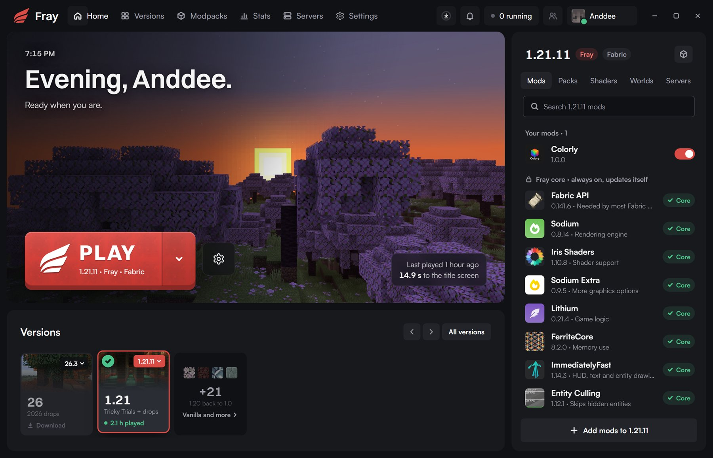

The fast, clean way to play Minecraft.
Free for Minecraft: Java Edition. More FPS from the first launch, the mods you'd go looking for already built in, and every version from 1.21 to 26.3.

Everything in one install.
No mod hunting. Open Fray, pick a version, press Play.
Every version, one launcher.
Fray's mods and menus run on every release from 1.21 to 26.3. Older versions play as plain Minecraft, all the way back to 1.0.
Play modpacks and add your own mods from Modrinth too.
The mods you'd add anyway, built in.
Press Right Shift in game for Fray's menu. Turn mods on, drag them where you want them, and change how each one looks.
HUD
- FPS
- CPS
- Coordinates
- Direction
- Ping
- TPS
- Memory
- Speed
- Biome
- Light Level
- Potion Effects
- Armor Status
- Item Cooldowns
- Clock
- World Time
- Scoreboard
- Bossbar
- Pack Display
- Battery
PvP
- Crosshair
- Hit Color
- Armor Hider
- Combo Counter
- Reach Display
- Target HUD
- Durability Warning
- K/D
Camera and movement
- Zoom
- Freelook
- Fly Boost
- Lighting
More FPS before you touch a setting.
The best performance mods come installed and switched on, so Fray runs fast the first time you press Play. Shaders work too.
- Sodium Faster rendering
- Lithium Faster game logic
- FerriteCore Less memory
- ImmediatelyFast Faster HUD and text
- Entity Culling Skips mobs you can't see
- Iris Shaders Shaders
Fray is in early access.
Testers play new builds first. Sign in to see if you're in, and watch the Discord for new spots.
Questions
Is Fray free?
Yes. No ads either.
How do I get it?
Fray is in early access and invite only for now. Download the installer and sign in: testers get Fray right away, everyone else goes on the waitlist. Spots open in the Discord first.
Which Minecraft versions does it play?
Fray's mods and menus run on every version from 1.21 to 26.3. The launcher also plays plain Minecraft back to 1.0.
Can I add my own mods?
Yes. Add any mod from Modrinth right in the launcher.
Is it on Mac?
No. Fray runs on Windows 10 and 11, and on Linux.
Can I use it on servers?
Yes. Fray's built-in mods change your screen and controls, not the game rules. Some servers have their own rules about client mods, so check theirs.
What does Fray collect?
The Privacy Policy lists everything, starting with a plain summary.